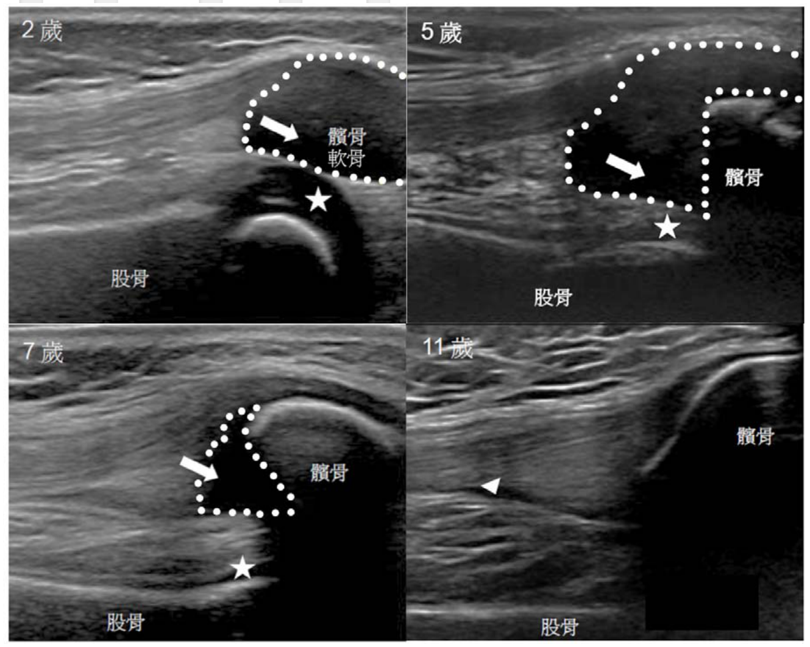
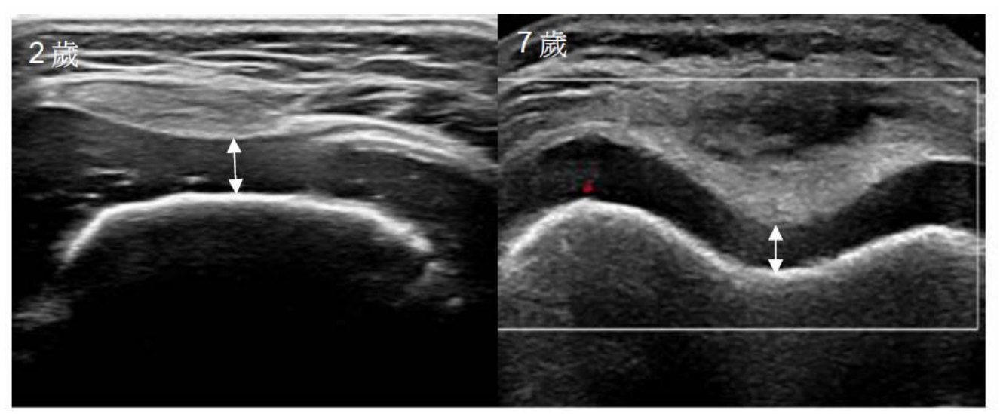

引言
兒童的肌肉骨骼超音波，從來就不是把成人標準直接縮小套用即可。從出生時僅有的骨幹初級骨化中心，到青春期完成的次級骨化中心，整個關節在不同年齡層呈現完全不同的影像光譜。若不熟悉這些變化，醫師常會把正常變異判讀為病灶，反之亦然。
為解決這個問題，OMERACT (Outcome Measures in Rheumatology) 兒科超音波小組由 Johannes Roth 醫師領銜，於 2014 年透過 Delphi 共識方法，制定了五項適用於健康兒童關節的 B-mode 超音波定義[1]。其後於 2018 年，由 Collado 等人擴增了兩項與都卜勒相關的補充定義[2]。本模組將完整介紹這套標準，並補上臨床上常見的影像陷阱。
為何兒童的關節超音波與成人不同
人類長骨在出生時，僅有骨幹 (diaphysis) 的初級骨化中心；骨頭兩端的骨骺 (epiphysis) 為大片透明軟骨。隨年齡增長，次級骨化中心 (secondary ossification center) 才會從軟骨中逐漸顯現，並向外擴張至接近骨骺輪廓。腕骨等短骨甚至要到學齡之後才會逐一出現。
因此，同一關節在 2 歲、5 歲、10 歲、15 歲掃描，影像差異極大。掃描者若不了解每個年齡層的「正常樣貌」，就容易將：
- 未骨化的透明軟骨誤判為關節積液
- 生長板 (physis / growth plate) 誤判為骨折線
- 軟骨內的血管通道 (vascular channels) 誤判為發炎或骨化中心

OMERACT 兒童關節 B-mode 五大定義
下表整理 2014 年 OMERACT 兒科超音波小組共識通過的五項定義[1]。每一項皆在多個年齡層 (2、5、10、15 歲) 及多個關節 (肩、肘、腕、MCP、髖、膝、踝、MTP) 中達成 ≥ 80% 專家共識。
| 結構 | 正常超音波表現 |
|---|---|
| 關節骨表面 (articular bone surface) | 呈現一條銳利的高回音線 (sharp hyperechoic line)，與下方低回音組織形成清楚對比。注意：兒童生長板呈現低回音橫線，不可誤認為骨折。 |
| 透明軟骨 (hyaline cartilage) | 均質的無回音 (anechoic) 或輕度低回音結構，表面為一條高回音線；不可壓縮 (noncompressible)。可能含散在小亮點，代表血管通道，非病理。 |
| 次級骨化中心 (secondary ossification center) | 隨年齡增加，於軟骨中出現之高回音團塊。表面可平整可不規則，皆屬正常成長過程。 |
| 關節囊 (joint capsule) | 覆蓋於骨頭與軟骨之上之高回音纖維狀條紋。「可能」可見、亦「可能」不見，視關節而定（髖、踝常明顯；其他小關節不一定）。 |
| 滑膜 (synovial membrane) | 正常情況下看不見。一旦見到一條相對鄰近組織呈低回音的結構，即懷疑滑膜增生 (synovial hypertrophy)。 |
2018 都卜勒附錄 (Doppler Amendment)
2018 年 Collado 等人在原有五項 B-mode 定義之上，加入兩項與都卜勒相關之新結構[2]：
| 結構 | 定義與臨床意義 |
|---|---|
| 生理性血管 (physiological vascularity) | 可於未骨化的骨骺軟骨、生長板 (physis)、脂肪墊偵測到 PD 訊號。任何年齡皆可見，分布與位置與關節、年齡有關。滑膜增生處出現的 PD 訊號永遠視為異常。 |
| 脂肪墊 (fat pad) | 位於關節囊內、滑膜外之脂肪組織，呈不均質回音 (類似皮下脂肪)，可能呈現生理性血管訊號。 |

臨床常見影像地雷
初學者在實作時最容易誤判的影像情境，整理如下：
總結
正確判讀兒童關節超音波的前提，是先把「正常」掌握清楚。而兒童的正常隨著年齡而變：2 歲、5 歲、10 歲、15 歲不一樣；膝、踝、髖、腕、MCP 也不一樣。OMERACT 兒科小組這十年來，從 B-mode 五項定義到都卜勒兩項補充，逐步替臨床建立了可信賴的標準。但這只是一個起點 —— 例如 2024-2025 年仍有多篇研究持續釐清膝關節正常滑液量參考值[3]、下肢肌腱附著點都卜勒型態[4]，以及更全面的兒童肌肉骨骼結構規範資料[5]。
對於主筆者而言，兒童關節超音波就像兒童風濕科醫師的聽診器，要靠經驗、靠反覆練習，也要靠扎實的解剖與發育學基礎。
參考資料
- Roth J, Jousse-Joulin S, Magni-Manzoni S, et al. Definitions for the sonographic features of joints in healthy children. Arthritis Care Res (Hoboken). 2015 Jan;67(1):136–142.
- Collado P, Windschall D, Vojinovic J, et al. Amendment of the OMERACT ultrasound definitions of joints' features in healthy children when using the DOPPLER technique. Pediatr Rheumatol. 2018;16:23.
- Knee-ultrasound reference values for the amount of joint fluid and synovial appearances in healthy children and adolescents. 2025.
- Differential pattern of Doppler signals at lower-extremity entheses of healthy children. 2025.
- Windschall D, Collado P, Vojinovic J, et al. Structural ultrasound of joints and tendons in healthy children: development of normative data. 2025.